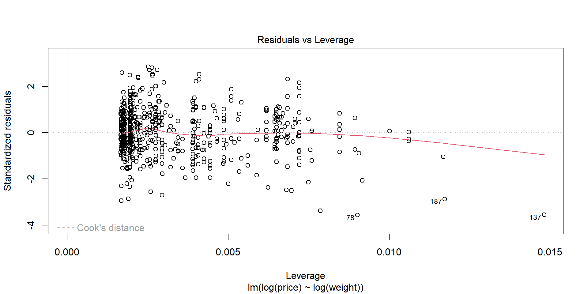
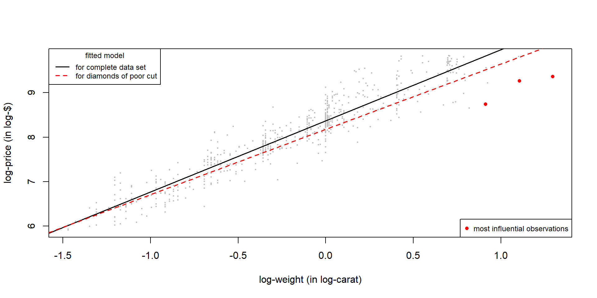
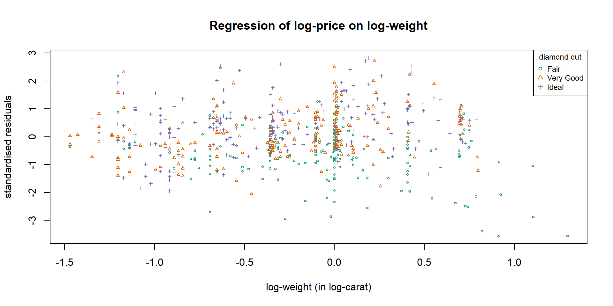

| Obs | Price | Weight | Cut | Leverage | Std. Residual | Cook’s distance |
|---|---|---|---|---|---|---|
| 78 | 6289 | 2.49 | Fair | 0.009 | -3.571 | 0.058 |
| 137 | 11668 | 3.65 | Fair | 0.015 | -3.558 | 0.095 |
| 187 | 10577 | 3.02 | Fair | 0.012 | -2.873 | 0.049 |
Figure 1 below shows the Residuals versus Leverage plot of the linear model of log-price on log-weight. The three observations with the highest Cook’s distance are labelled. These are observations 78, 137 and 187.

Figure 1: Residuals versus Leverage plot for the linear model of log-price on log-weight.
Table 1 gives the price, weight, cut, leverage, standardised residual and Cook’s distance for the three observations that were identified as most influential in Figure 1.
| Obs | Price | Weight | Cut | Leverage | Std. Residual | Cook’s distance |
|---|---|---|---|---|---|---|
| 78 | 6289 | 2.49 | Fair | 0.009 | -3.571 | 0.058 |
| 137 | 11668 | 3.65 | Fair | 0.015 | -3.558 | 0.095 |
| 187 | 10577 | 3.02 | Fair | 0.012 | -2.873 | 0.049 |
Figure 2 shows a scatterplot of log-price against log-weight. We note that the line fitted to the diamonds of fair cut is less steep than the line fitted to the whole dataset. This means that for diamonds of fair cut the increase in log-price for a given increase in log-weight tends to be smaller than predicted by Model 1. The heaver the fair cut diamond, the greater this difference is. All three observations lie well below the fitted line of Model 1 but also below the fitted line of Model 2.

Figure 2: Scatterplot of log-price against log-weight with fitted lines for Model 1 and Model 2.
Figure 3 shows a scatterplot of the standardised residuals for Model 1 against log-weight. The colour-coding reveals that the heaviest diamonds in the data set tend to have a fair cut. More importantly, diamonds with a fair cut tend to have negative residuals, while diamonds with a very good or ideal cut, tend to have positive residuals. This provides support for the inclusion of cut as an additional explanatory variable in the model.

Figure 3: A scatterplot of standardised residuals of Model 1 against log-weight.
Observation 137 has the largest Cook’s distance and is thus the most influential observation. It is a diamond with a fair cut and weighs 3.65 carat, which is the highest. As leverage measures how unusual the predictor values are within a given the dataset, this results in observation 137 having the highest leverage within the dataset as can be seen in Figure 1 and Table 1.
Furthermore, the table in Part 1 shows that observation 137 has a large negative standardised residual equal to -3.56. Figure 2 demonstrate that the model fitted to the complete dataset tends to over-estimate the price for diamonds of fair cut. Figure 3 shows that overprediction is worse for heavier diamonds. Hence observation 137 results in a large negative residual.
Because Cook’s distance reflects both leverage and residual size, the high leverage and large negative residual of observation 137 make it the most influential observation.
| Obs | Price | Weight | Cut | Leverage | Std. Residual | Cook’s distance | |
|---|---|---|---|---|---|---|---|
| 2 | 137 | 11668 | 3.65 | Fair | 0.015 | -3.558 | 0.095 |